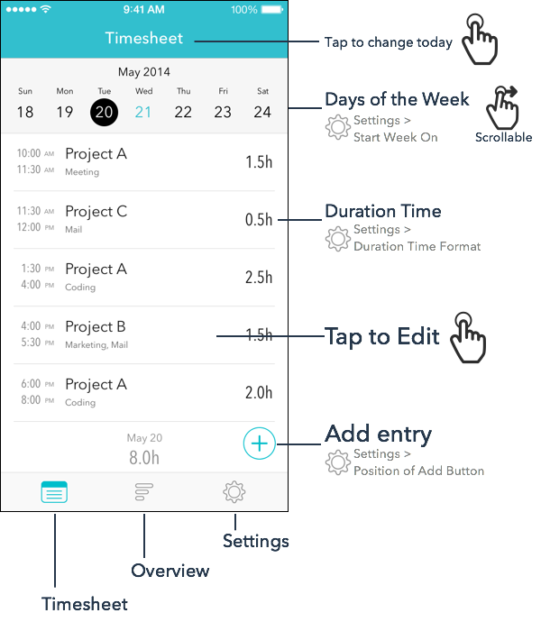
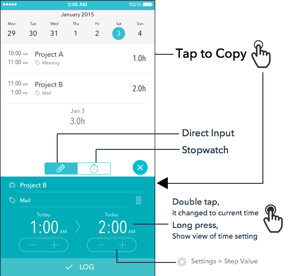

Help
Tips


FAQ
- アプリを起動すると落ちる
-
iPhoneの「カレンダー」が正常に動作していない場合、Timesheetアプリが起動できない事があります。
iPhone標準アプリの「カレンダー」アプリを起動し、予定を追加ができるかどうか、追加した予定が参照できるかどうかを確認してください。
-
予定が追加できない場合、復旧のため、以下をお試しください。
- カレンダーの内容が消えないよう、バックアップを取る
- iPhoneの設定 > iCloud 画面の 「カレンダー」 がオフになっていれば、オンにする
「カレンダー」 がオンになっていれば、オフにして再度オンにする
- 「カレンダー」アプリを再起動し、正常に動作するようになったかを確認する。
-
正常に復旧した場合、iCloudのカレンダーをオフに戻しても大丈夫です。
iCloudをオンになっていたのをオフにした場合、過去のデータが消えてしまう場合があります。
復旧させるためには、iPhoneの設定 > メール/連絡先/カレンダー 画面の カレンダー設定の「同期」を "すべてのイベント" に設定した後、
「カレンダー」アプリを起動して確認して下さい。
- 記録したデータが消えてしまった
- iCloudのカレンダーを使用していた場合は、ほとんどの場合、同期期間を変更することによりデータを復旧出来ます。
- iPhoneの 設定 > メール/連絡先/カレンダー 画面を開く
- カレンダーの[同期]設定を、[すべてのイベント]に変更する
- iPhone標準の「カレンダー」アプリを起動して、データが復旧したかを確認します。
- ローカルカレンダーを使用していた場合、iCloudで「カレンダー」をオンに変更すると消えてしまう場合があるようです。
この場合、iCloudをオフにしてみてください。